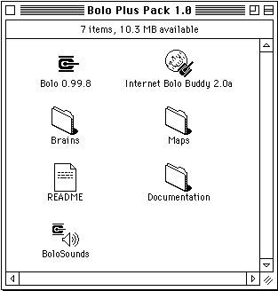
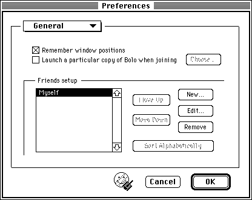

Astrospark Bolorama allows you to play Bolo with other players over the internet. This page is designed to be accessible from vintage Macintosh computers running contemporary browsers.
Download Bolo
Configure Bolo
Start a New Game
Configure Internet Bolo Buddy
Join an Existing Game
To play Bolo over the internet with Bolorama, you will need Bolo 0.99.8 and a Bolo tracker such as Internet Bolo Buddy. You can get them in the Bolo Plus Pack, along with a collection of maps: Bolo Plus Pack 1.0.sit
If you run Bolo 0.99.8 without a preferences file present, it will default to using the bolo.astrospark.com server. If you're using a different Bolorama server, or if you don't want to delete your existing preferences, follow these instructions.
You only need to configure Bolo once. Open Bolo. On the Network Selection dialog, select UDP/IP. Check the Skip this dialog next time box and click the OK button.

On the UDP (Internet) Setup dialog, enter your name in the Your player name for the game box. Check the Remember player name box and click the BoloTracker button.

In the Machine Name (or IP address) box, type bolo.astrospark.com and click the OK button.
Open Bolo. On the UDP (Internet) Setup dialog, click the New button.
Configure the game options as you would like and click the OK button.

If you run Internet Bolo Budy 2.0a without a preferences file present, it will default to using the bolo.astrospark.com server. If you have versions of Bolo on your computer other than 0.99.8, you need to tell Internet Bolo Buddy to use 0.99.8.
Open Internet Bolo Buddy. Click the Edit menu and select Preferences. In the dropdown box at the top of the Preferences dialog, select General. Check the option to "Launch a particular copy of Bolo when joining" and choose Bolo 0.99.8.
If you want to add additional Bolorama servers, follow these instructions.
Open Internet Bolo Buddy. Click the Edit menu and select Preferences. In the dropdown box at the top of the Preferences dialog, select Game Hunter. Click the New... button. In the dialog box, enter the details for the new server.
Open Internet Bolo Buddy. Make sure Astrospark Bolorama is selected in the Tracker dropdown box and click the Update button.
Find the game you want to join in the list and double click on it.Bolo will start and the connection information will automatically be filled in. Click the Join button.